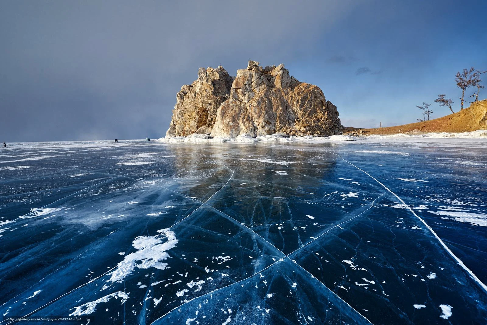
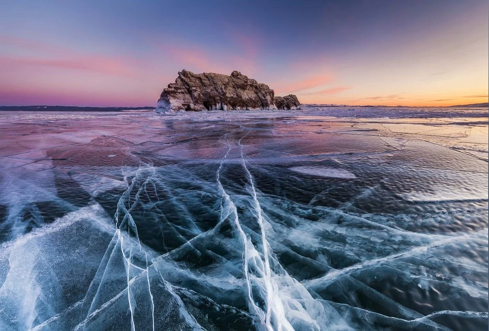
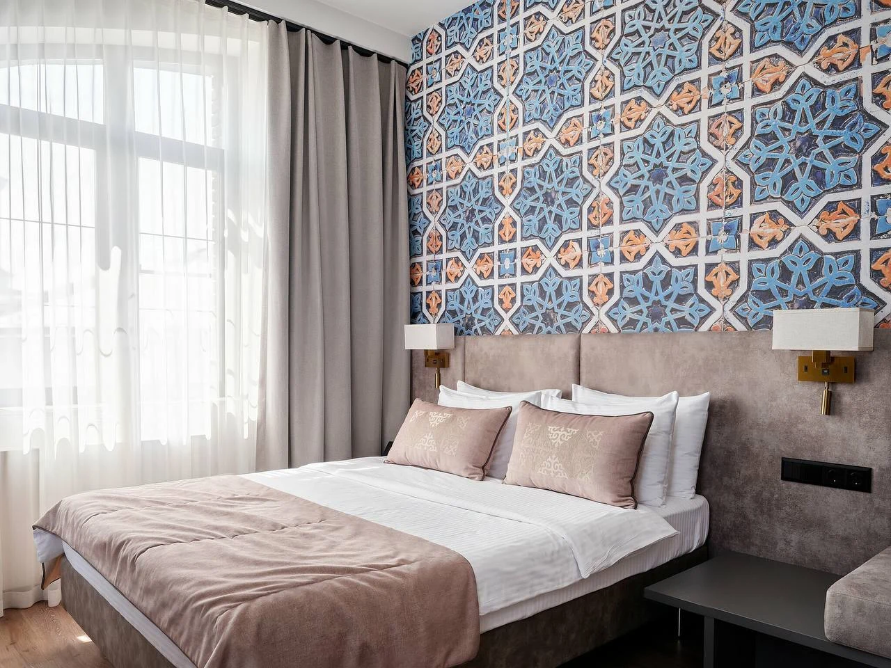
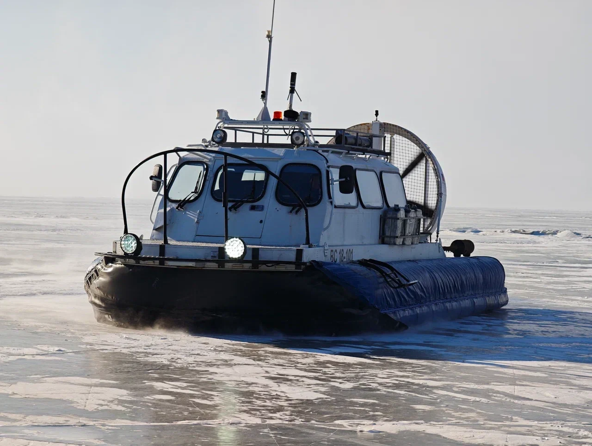
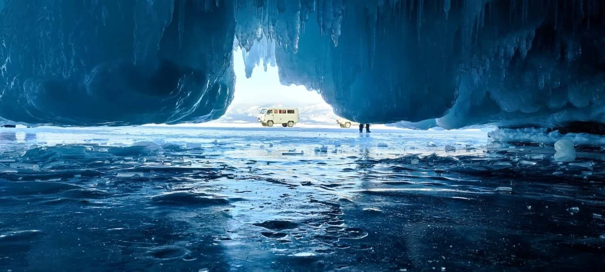
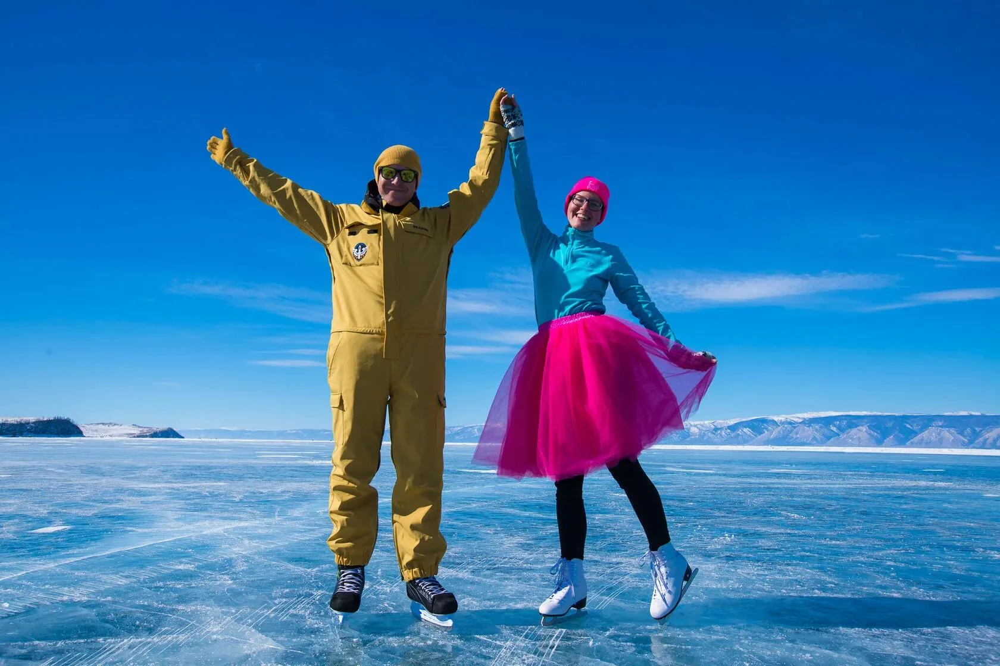
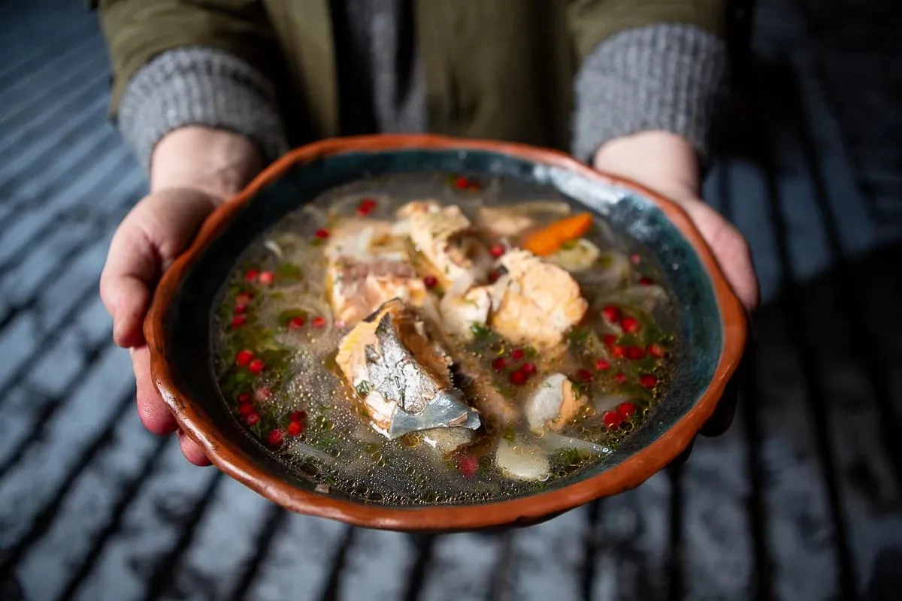
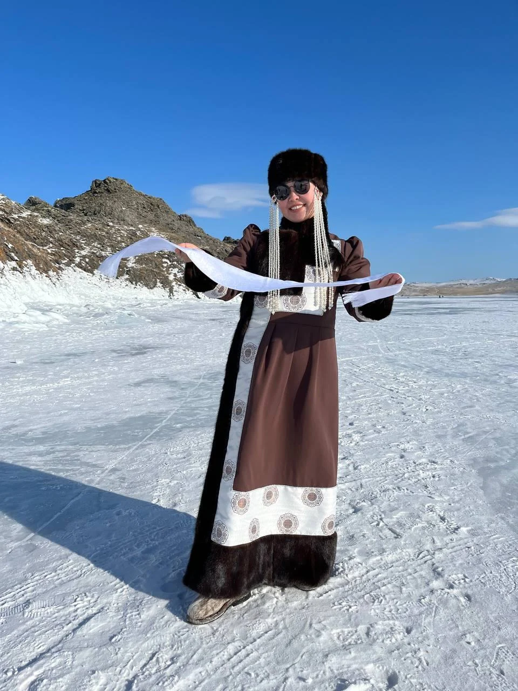
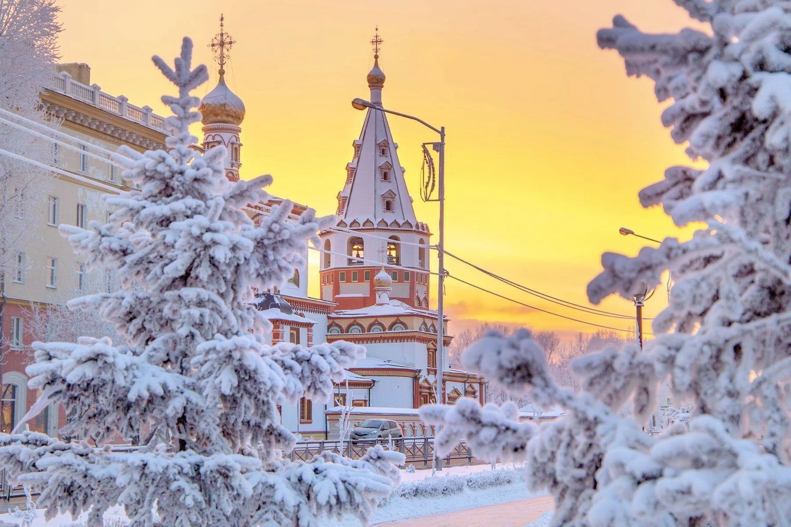
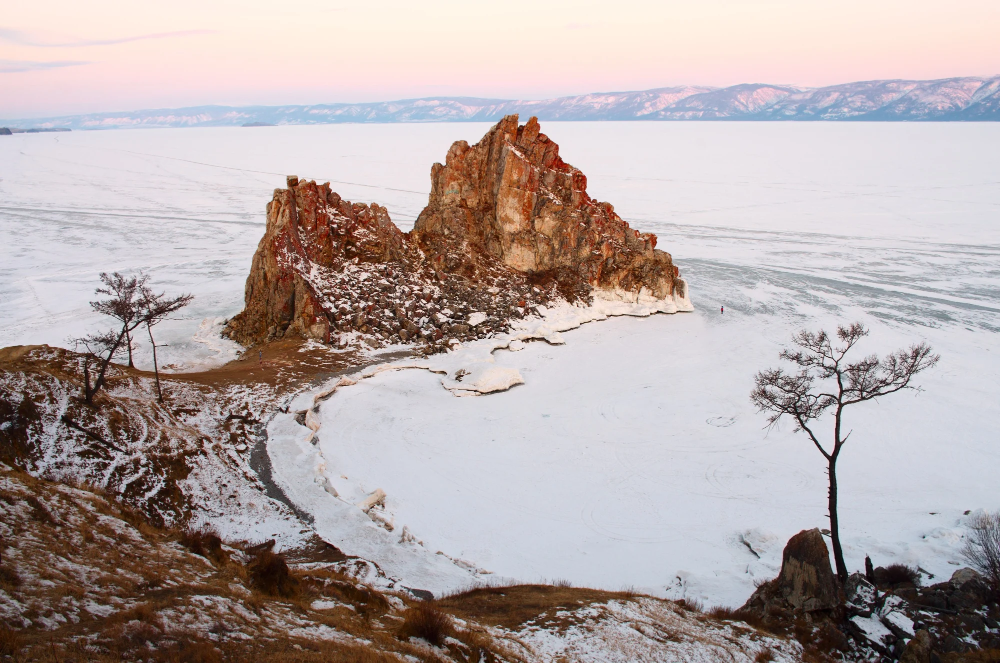

Уютные отели 3–4 звезды
Выбираем комфортные отели уровня 3–4 звезды: тепло, чисто и хорошо отдыхать после насыщенного дня.

Зимняя сказка
Зимнее путешествие
по Байкалу.
Иркутск · Листвянка · Ольхон
В сопровождении 100 ТРОП

02 / Первый шаг
Здесь вода становится стеклом, скалы обрастают хрусталём, а привычный мир остаётся где-то далеко.
03 / Комфорт

Выбираем комфортные отели уровня 3–4 звезды: тепло, чисто и хорошо отдыхать после насыщенного дня.
Турлидер говорит на китайском и русском, помогает с любыми вопросами и заботится о вашем отдыхе.
Проверенный транспорт — чистый, тёплый и вместительный. Можно устроиться поудобнее и смотреть в окно.
Оставляем достаточно времени для фотографий на каждой локации. Красота не любит спешки.
Горячее питание и чай на завтрак, обед и ужин. Впереди ещё столько всего.

04 / Безопасность
Лицензированный транспорт и опытные водители, которые знают маршрут.
По льду передвигаемся на специализированном транспорте — хивусах, рассчитанных на движение по льду и воде.
До поездки поможем подобрать одежду, чтобы вам было тепло и комфортно на зимнем Байкале.
05 / Впечатления

01 / Байкальский лёдПрозрачный, пузырчатый, с узорами и трещинами. Увидим десятки его видов и заглянем в ледяные гроты.

02 / КонькиНаденем коньки и покатаемся по льду. Вокруг — простор, над головой — огромное небо.

03 / Местная кухняПопробуем местную кухню и байкальского омуля. А вечером устроим красивый ужин в ледяной пещере.

04 / ТрадицииПознакомимся с местными традициями. Станцуем национальные танцы и споём песни — вместе.
06 / Маршрут
От первой встречи в Иркутске
до «я обязательно вернусь».

Иркутск
Встречаем вас прямо в аэропорту и отвозим в гостиницу. Сегодня можно отдохнуть после перелёта, выдохнуть и настроиться на приключение.
Порядок локаций и передвижений может меняться с учётом погоды и ледовой обстановки.
Пять ночей в отелях, трансферы из аэропорта и обратно, все перемещения и экскурсии по программе, входные билеты, сопровождение турлидера на русском и китайском.
Горячее питание и чай на завтрак, обед и ужин. Фотограф на протяжении путешествия.
Авиабилеты до Иркутска и обратно, питание вне программы, прокат коньков и костюмов для фотосессий, баня и личные расходы.
Поможем подобрать подходящие рейсы. Даты, актуальную стоимость и условия бронирования можно уточнить у команды.
Термобельё, флис, утеплённые ветрозащитные куртка и брюки. Тёплая шапка, варежки, бафф, термоноски и зимняя обувь.
Пригодятся термос, солнцезащитные очки, крем с SPF, грелки и зарядные устройства. Перед поездкой турлидер поможет проверить список.
Группу сопровождает турлидер, говорящий на русском и китайском языках. Он помогает с бытовыми вопросами и общением в поездке.

Поехали с нами
Приезжайте за прозрачным льдом,
зимними пейзажами и новыми впечатлениями.